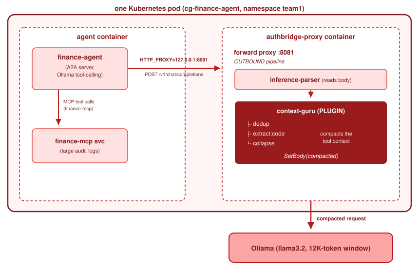

Concepts
Context compaction
Make tool output smaller before the model reads it.
Context compaction changes the request that an agent sends to a model. It makes the tool output in that
request smaller. A task with more output than the context window of the model then completes correctly.
The name of the plugin is context-guru.
Alpha
This feature is an experiment. The behaviour and the configuration will change. Use the observe mode before you use the enforce mode.
The problem that it solves#
An agent collects tool output. A small number of calls that return audit records or file lists can produce more text than the model accepts.
The failure is silent. The request is truncated, the model does not receive the important part, and the model gives a confident and incorrect answer.
This table shows one measured example. There is one agent, one model and a context window of 12,000 tokens. The plugin is the only variable.
| Mode | What the model receives | Result |
|---|---|---|
| off | 18,000 tokens, truncated to 12,000 | The model does not find the problem. It gives an incorrect answer. |
| observe | 18,000 tokens, truncated. The plugin measures only. | The same incorrect answer. The log records that the plugin can reduce 52 KB to 30 KB. |
| enforce | 10,000 tokens, compacted. The request fits. | The model finds the duplicate transaction and clears the others. |
The observe mode is the reason to have an observe mode. It gives you the measurement without a change to the behaviour. You can therefore calculate the benefit before you accept the risk.
How it operates#
The plugin runs inside the Cortex process, on the outbound chain. It is not a separate service. The model calls of the agent pass through the proxy, and the plugin changes the body of the request before the request leaves the pod.

The plugin uses three methods on the tool output:
- Remove duplicates. It combines repeated content.
- Extract. It selects the important part. For example, it selects the code from a large file list.
- Summarize. It shortens the remainder.
The response path is a pass-through today. Expansion and restoration will arrive in a later release.
Enable the plugin#
You must enable this plugin when you build Cortex, not only when you configure it. Its engine
needs a large set of libraries. The build option is -tags include_plugin_contextguru. Confirm that
your Cortex program contains the plugin before you configure it.
| Setting | Function |
|---|---|
paths |
The request paths to compact. The defaults are /v1/chat/completions, /v1/completions and /v1/messages. |
model |
An optional address of a small model, for the summarize and extract methods. If you omit it, those methods use fixed rules. |
engine |
The configuration of the engine. The default is preset: balanced. |
The model object accepts base_url, model, api_key, max_tokens with a default of 4096, and
timeout_ms with a default of 150000.
For each setting, see the plugin catalogue.
How to introduce the plugin#
- Get a Cortex program that contains the plugin.
- Enable the plugin in the observe mode, on one agent that produces large tool output.
- Read the log. It records the reduction that the plugin can make.
- If the reduction is sufficient, change to the enforce mode. Then confirm that the answers of the agent are still correct.
Step 4 is necessary. Compaction changes what the model receives. Confirm the result with your own tasks.
Use the plugin on your computer#
You do not need a cluster:
sentinel authbridge exec \
--config https://raw.githubusercontent.com/sentinel/sentinel-cli/refs/heads/main/examples/context-guru-tls-bridge.yaml \
-- claude "explain this repo"
What you see for it#
The observe mode records the reduction that the plugin can make, so you can measure the benefit
before you accept the risk. On a laptop, agentop observe shows the tokens and the cost that the
plugin removed for each session. See
Read the pruning savings.
Try it#
The context compaction demonstration contains the finance example from the table above.
Related pages#
- Read the numbers shows the saving that the plugin made.
- Cost control gives a smaller reduction with less risk.
- context-guru is the engine.